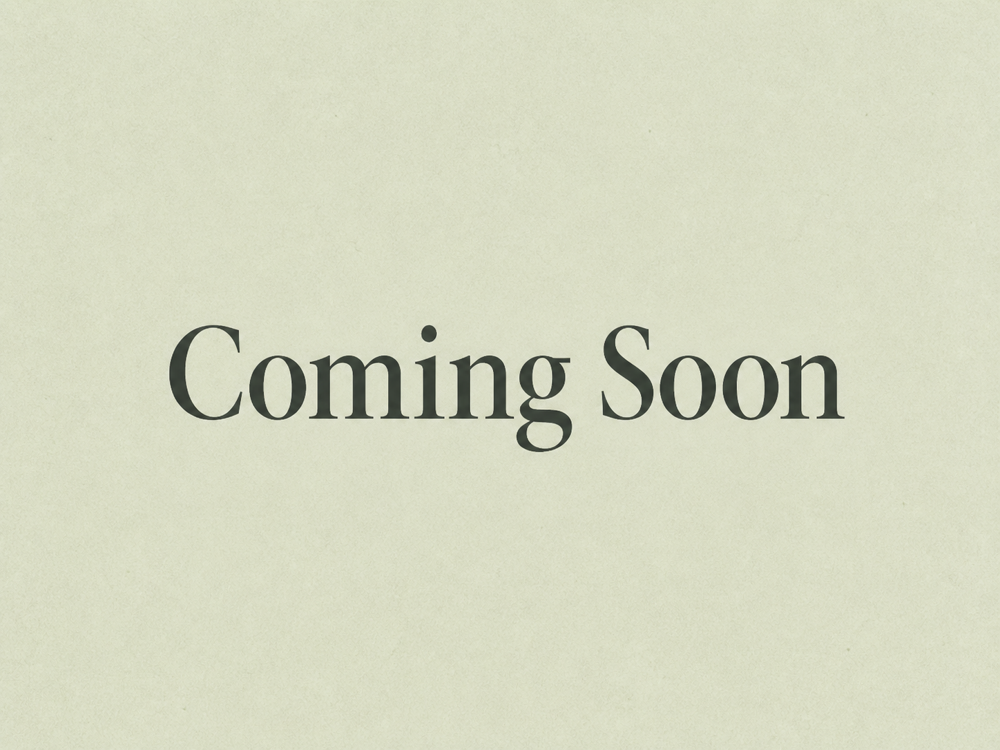
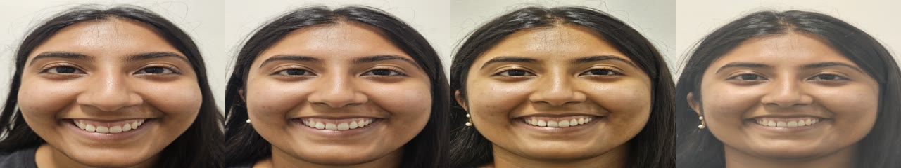

Project 1: Images of the Russian Empire
Reconstructing color photographs by aligning the red, green, and blue channels of historical glass-plate images.

3 projects

Exploring how focal length, camera distance, and perspective change the appearance of a subject.

Reconstructing color photographs by aligning the red, green, and blue channels of historical glass-plate images.
Using image filters and frequency-domain techniques to sharpen images, create hybrids, and blend visual content.